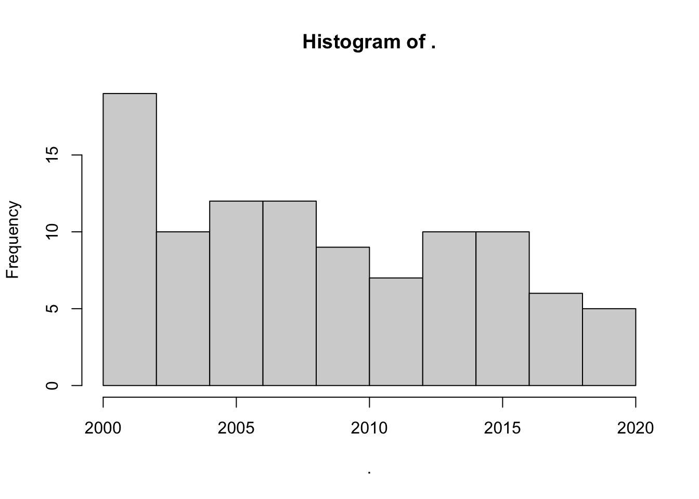
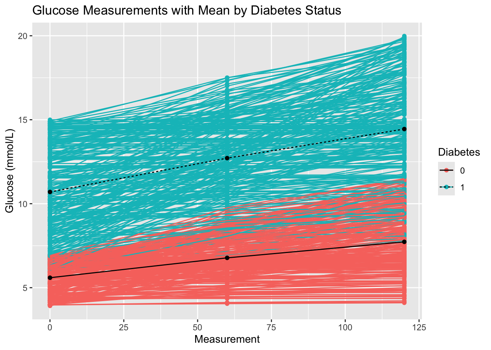

library(tidyverse)Exercise 2 - solutions: Advanced Tidyveres
Introduction
In this exercise you will do some more advance tidyverse operations such as pivoting and nesting, as well as create plots to brush up on your ggplot skills.
First steps
- Load packages.
- Load the joined diabetes data set you created in exercise 1 and the glucose dataset from the data folder.
diabetes_join <- readxl::read_excel('../out/diabetes_join.xlsx')
df_glucose <- readxl::read_excel('../data/df_glucose.xlsx')- Have a look at the glucose dataset. The
OGTTcolumn contains measurements from a Oral Glucose Tolerance Test where blood glucose is measured at fasting (Glucose_0), 6 hours after glucose intake (Glucose_6), and 12 hours after (Glucose_12).
head(df_glucose)# A tibble: 6 × 4
Glucose_0 Glucose_60 Glucose_120 ID
<dbl> <dbl> <dbl> <dbl>
1 6.24 6.32 6.37 9046
2 5.58 7.68 9.18 51676
3 5.40 6.34 6.85 1665
4 6.33 8.81 10.4 12095
5 6.84 7.75 8.37 12175
6 5.23 6.17 6.73 8213- Restructure the glucose dataset into a long format. How many rows are there per ID? Does that make sense?
Hint
Remember the flow:
pivot_longer(cols = LIST_WITH_COLUMNS_TO_PIVOT,
names_to = "NEW_COLUMN_CONTAINING_COLUMN_NAMES",
values_to = "NEW_COLUMN_CONTAINING_COLUMN_VALUES")Have a look at the slides for better overview.
df_glucose_long <- df_glucose %>%
pivot_longer(cols = starts_with("Glucose"),
names_to = "Measurement",
values_to = "Glucose (mmol/L)"
)
head(df_glucose_long)# A tibble: 6 × 3
ID Measurement `Glucose (mmol/L)`
<dbl> <chr> <dbl>
1 9046 Glucose_0 6.24
2 9046 Glucose_60 6.32
3 9046 Glucose_120 6.37
4 51676 Glucose_0 5.58
5 51676 Glucose_60 7.68
6 51676 Glucose_120 9.18- Change the glucose measurements to numeric variable.
Hint
The stringr packages is a part of tidyverse and has many functions for manipulating strings. Find a function that can split the string so you can extract the numbers on the other side of the underscore.
df_glucose_long <- df_glucose_long %>%
mutate(Measurement = str_split_i(Measurement, '_', 2) %>% as.numeric())
head(df_glucose_long)# A tibble: 6 × 3
ID Measurement `Glucose (mmol/L)`
<dbl> <dbl> <dbl>
1 9046 0 6.24
2 9046 60 6.32
3 9046 120 6.37
4 51676 0 5.58
5 51676 60 7.68
6 51676 120 9.18- Nest the glucose measurements and values such that there is only one row per ID.
Hint
Remember the flow:
group_by() %>%
nest() %>%
ungroup()df_glucose_nested <- df_glucose_long %>%
group_by(ID) %>%
nest(OGTT = c(Measurement, `Glucose (mmol/L)`)) %>%
ungroup()
head(df_glucose_nested)# A tibble: 6 × 2
ID OGTT
<dbl> <list>
1 9046 <tibble [3 × 2]>
2 51676 <tibble [3 × 2]>
3 1665 <tibble [3 × 2]>
4 12095 <tibble [3 × 2]>
5 12175 <tibble [3 × 2]>
6 8213 <tibble [3 × 2]>- Merge the nested glucose dataset with the joined diabetes.
diabetes_glucose <- diabetes_join %>%
left_join(df_glucose_nested, by = 'ID')
head(diabetes_glucose)# A tibble: 6 × 12
ID Sex Age BloodPressure GeneticRisk BMI PhysicalActivity Smoker
<dbl> <chr> <dbl> <dbl> <dbl> <dbl> <dbl> <chr>
1 9046 Male 34 84 0.619 24.7 93 Unknown
2 51676 Male 25 74 0.591 22.5 102 Unknown
3 60182 Male 50 80 0.178 34.5 98 Unknown
4 1665 Female 27 60 0.206 26.3 82 Never
5 56669 Male 35 84 0.286 35 58 Smoker
6 53882 Female 31 78 1.22 43.3 59 Smoker
# ℹ 4 more variables: Diabetes <chr>, Married <chr>, Work <chr>, OGTT <list>- Pull the glucose measurements (
OGTT) from your favorite ID.
Hint
First filter for your favorite ID and then pull the nested column.
diabetes_glucose %>%
filter(ID == 9046) %>%
pull(OGTT)[[1]]
# A tibble: 3 × 2
Measurement `Glucose (mmol/L)`
<dbl> <dbl>
1 0 6.24
2 60 6.32
3 120 6.37- Create a figure that visualizes glucose measurements at each time point (Measurement), stratified by patient ID. Give the plot a meaningful title.
diabetes_glucose %>%
unnest(OGTT) %>%
ggplot(aes(x = Measurement,
y = `Glucose (mmol/L)`)) +
geom_point(aes(color = Diabetes)) +
geom_line(aes(group = ID, color = Diabetes)) +
labs(title = 'Glucose Measurements Across Time Points by Diabetes Status')
- Calculate the mean glucose measure for each measurement.
Hint
You will need to use unnest(), group_by(), and summerize().
diabetes_glucose %>%
unnest(OGTT) %>%
group_by(Measurement) %>%
summarize(`Glucose (mmol/L)` = mean(`Glucose (mmol/L)`))# A tibble: 3 × 2
Measurement `Glucose (mmol/L)`
<dbl> <dbl>
1 0 8.16
2 60 9.76
3 120 11.1 - Make the same calculation and stratify on Diabetes.
glucose_mean <- diabetes_glucose %>%
unnest(OGTT) %>%
group_by(Measurement, Diabetes) %>%
summarize(`Glucose (mmol/L)` = mean(`Glucose (mmol/L)`)) %>%
ungroup()`summarise()` has grouped output by 'Measurement'. You can override using the
`.groups` argument.glucose_mean# A tibble: 6 × 3
Measurement Diabetes `Glucose (mmol/L)`
<dbl> <chr> <dbl>
1 0 0 5.59
2 0 1 10.7
3 60 0 6.78
4 60 1 12.7
5 120 0 7.73
6 120 1 14.4 This next exercise might be a bit more challenging. It requires multiple operations and might involve some techniques that were not explicitly shown in the presentations.
- Recreate the plot you made in Exercise 10 and include the mean value for each glucose measurement for the two Diabetes statuses (0 and 1).
Hint
There are several ways to solve this task. There is a workflow suggestion: - The line in the plot is connected by ID. Create new IDs for the mean values that do not already exist in the dataset. Use RANDOM_ID %in% df$ID to check if an ID is already present. - Data from another dataset can be added to the plot like this: + geom_point(DATA, aes(x = VAR1, y = VAR2, group = VAR3))
The points in the plot is connected by ID. Let’s find two ID’s (one for Diabetes == 0 and another for Diabetes == 1) that are not in the data. We can use the same numbers as the Diabetes status.
0 %in% diabetes_glucose$ID[1] FALSE1 %in% diabetes_glucose$ID[1] FALSEChange the class of Measurement to factor and add ID to the glucose mean data set.
glucose_mean <- glucose_mean %>%
mutate(ID = Diabetes %>% as.double())
glucose_mean# A tibble: 6 × 4
Measurement Diabetes `Glucose (mmol/L)` ID
<dbl> <chr> <dbl> <dbl>
1 0 0 5.59 0
2 0 1 10.7 1
3 60 0 6.78 0
4 60 1 12.7 1
5 120 0 7.73 0
6 120 1 14.4 1Copy-paste the code in Exercise 9 and add lines with new data.
diabetes_glucose %>%
unnest(OGTT) %>%
ggplot(aes(x = Measurement,
y = `Glucose (mmol/L)`)) +
geom_point(aes(color = Diabetes)) +
geom_line(aes(group = ID, color = Diabetes)) +
# Glucose mean data
geom_point(data = glucose_mean,
aes(x = Measurement,
y = `Glucose (mmol/L)`,
group = ID)) +
geom_line(data = glucose_mean,
aes(x = Measurement,
y = `Glucose (mmol/L)`,
group = ID,
linetype = Diabetes)) +
labs(title = "Glucose Measurements with Mean by Diabetes Status")
ggsave('../out/figure2_12.png')Saving 7 x 5 in image- Export the final dataset. Since the dataset is nested, you cannot export it as an excel file. Export the dataset as an
.rdsfile. Have a guess at what the function is called.
write_rds(diabetes_glucose, '../out/diabetes_glucose.rds')